Testing Siddhi Applications¶
The Streaming Integrator allows the following tasks to be carried out to ensure that the Siddhi applications you create and deploy are validated before they are run in an actual production environment.
- Validate Siddhi applications that are written in the Streaming Integrator Studio.
- Run Siddhi applications that were written in the Streaming Integrator Studio in either Run or Debug mode.
- Simulate events to test the Siddhi applications and analyze events that are received and sent. This allows you to analyze the status of each query within a Siddhi application at different execution points.
Validating a Siddhi application¶
To validate a Siddhi application, follow the procedure below:
- Start and access the Streaming Integrator Studio. For detailed instructions, see Starting Stream Integration Studio .
- In this example, let's use an existing sample as an example. Click on the ReceiveAndCount sample to open it.
-
Sample opens in a new tab. This sample does not have errors, and therefore, no errors are displayed in the editor. To create an error for demonstration purposes, change the
count()function in thequery1query tocountNew()as shown below.@info(name='query1') from SweetProductionStream select countNew() as totalCount insert into TotalCountStream; `Now, the editor indicates that there is a syntax error. If you move the cursor over the error icon, it indicates that
countNewis an invalid function name as shown below.
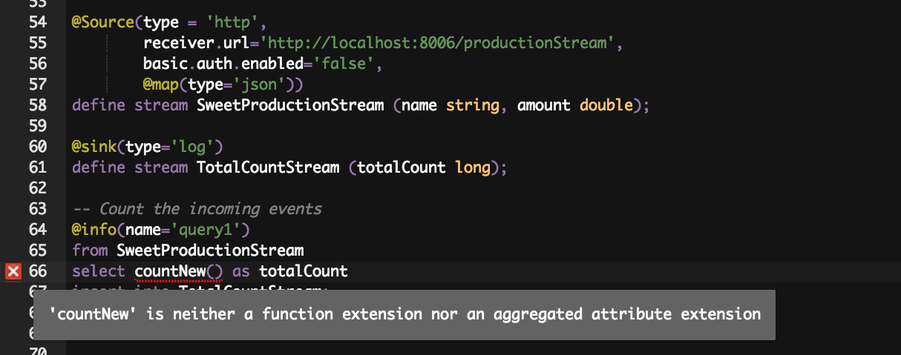
Running or debugging a Siddhi application¶
You can run or debug a Siddhi application to verify whether the logic you have written is correct. To start a Siddhi application in the run/debug mode, follow the procedure below:
-
Start and access the Streaming Integrator Studio. For detailed instructions, see Starting Stream Integration Studio.
-
For this example, click the existing sample ReceiveAndCount. It opens in a new untitled tab.
- Save the Siddhi file so that you can run it in the Run or Debug mode.
To save it, click File => Save. Once the file is saved,
you can see the Run and Debug menu options enabled as shown
below.
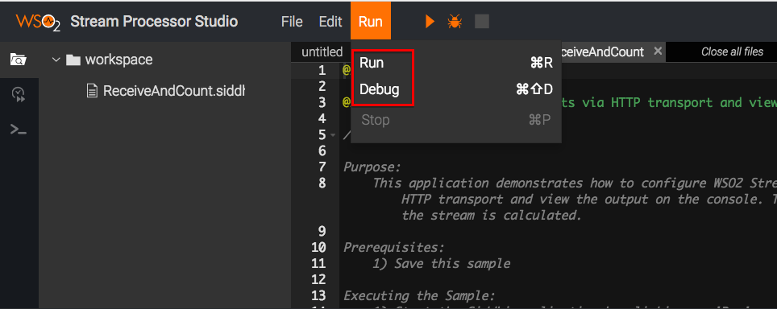- To start the application in Run mode, click Run => Run. This logs the following output in the console.
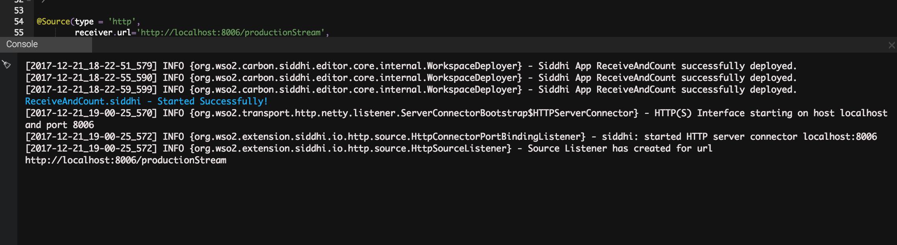 - Start the application in the Debug mode, click Run =>
Debug . As a result, the following mesage is logged in the
console. You can also note that another console tab is opened
with debug options.
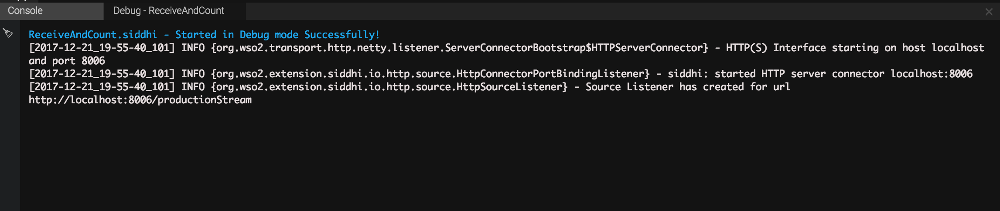
- To start the application in Run mode, click Run => Run. This logs the following output in the console.
- To create an error for demonstration purposes, change the
count()function in thequery1query tocountNew(), and save. Then click Run => Run. As a result, the following output is logged in the console.
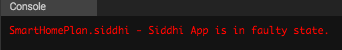
Simulating events¶
This section demonstrates how to test a Siddhi application via event simulation. Event simulation involves simulating predefined event streams. These event stream definitions have stream attributes. You can use event simulator to create events by assigning values to the defined stream attributes and send them as events. This is useful for testing Siddhi applications in order to evaluate whether they function as expected
Events can be simulated in the following methods:
- Simulating a single event
- Simulating multiple events via CSV files
- Simulating multiple events via databases
- Generating random events
Tip
Before you simulate events for a Siddhi application, you need to run or debug it. Therefore, before you try this section, see Running or debugging a Siddhi application.
Simulating a single event¶
This section demonstrates how to simulate a single event to be processed via the Streaming Integrator.
Tip
Before simulating events, a Siddhi application should be deployed.
To simulate a single event, follow the steps given below.
-
Access the Streaming Integrator Studio via the
http://localhost:/editorURL. The Streaming Integrator Studio opens as shown below.Info
The default URL is
http://localhost:9090/editor.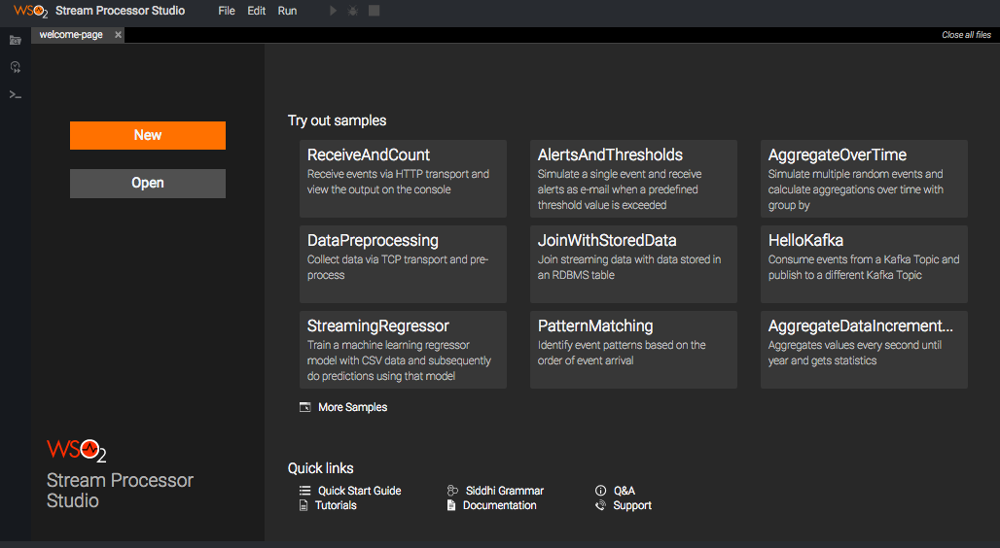
-
Click the Event Simulator icon in the left pane of the editor to open the Single Simulation panel.
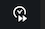
It opens the left panel for event simulation as follows.
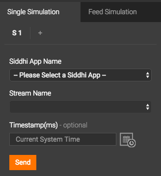 - Enter Information in the Single Simulation panel as described
below.
- In the Siddhi App Name field, select a currently deployed Siddhi application.
- In the Stream Name field, select the event stream for which you want to simulate events. The list displays all the event streams defined in the selected Siddhi application.
- If you want to simulate the event for a specific time different
to the current time, enter a valid timestamp in the
Timestamp field. To select a timestamp, click the time and
calendar icon next to the Timestamp field.
Then select the required date, hour, minute, second and millisecond. Click Done to select the time stamp entered. If you want to select the current time, you can click Now. - Enter values for the attributes of the selected stream.
- Click Send to start sending the event. The simulated event is
logged similar to the sample log given below.
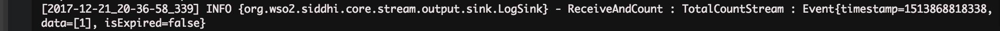
Simulating multiple events via CSV files¶
This section explains how to generate multiple events via CSV files to be analyzed via the Streaming Integrator.
Tip
Before simulating events, a Siddhi application should be deployed.
To simulate multiple events from a CSV file, follow the steps given below.
-
Access the Streaming Integrator Studio via the
http://localhost:/editorURL. The Streaming Integrator Studio opens as shown below.Info
The default URL is
http://localhost:9090/editor. -
Click the Event Simulator icon in the left pane of the editor.
-
In the event simulation left panel that opens, click on the Feed Simulation tab.
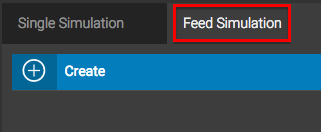 -
To create a new simulation, click Create . This opens the following panel.
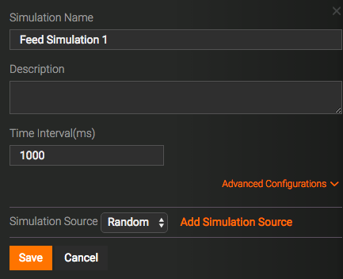 - Enter values for the displayed fields as follows.
- In the Simulation Name field, enter a name for the event simulation.
- In the Description field, enter a description for the event simulation.
- If you want to receive events only during a specific time interval, enter that time interval in the Time Interval field.
- Click Advanced Configurations if you want to enter detailed
specifications to filter events from the CSV file. Then enter
information as follows.
- If you want to include only events that belong to a specific
time interval in the simulation feed, enter the start time
and the end time in the Starting Event's Timestamp and
Ending Event's Timestamp fields respectively. To select
a timestamp, click the time and calendar icon next to the
field.
Then select the required date, hour, minute, second and millisecond. Click Done to select the time stamp entered. If you want to select the current time, you can click Now . - If you want to restrict the event simulation feed to a specific number of events, enter the required number in the No of Events field.
- If you want to include only events that belong to a specific
time interval in the simulation feed, enter the start time
and the end time in the Starting Event's Timestamp and
Ending Event's Timestamp fields respectively. To select
a timestamp, click the time and calendar icon next to the
field.
- In the Simulation Source field, select CSV File .
- Click Add Simulation Source to open the following section.
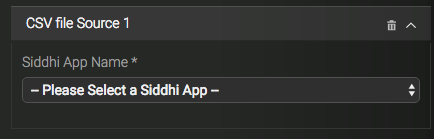
In the Siddhi App Name field, select the required Siddhi application. Then more fields as shown below.
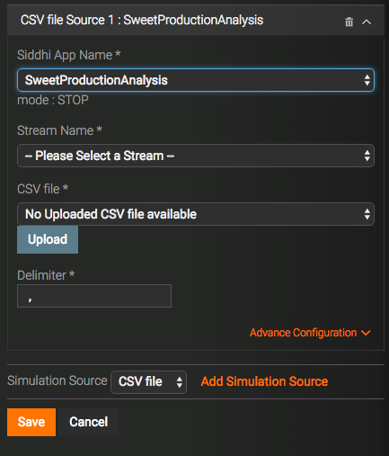
Enter details as follows:- In the Stream Name field, select the stream for which you want to simulate events. All the streams defined in the Siddhi App you selected are available in the list.
- In the CSV File field, select an available CSV file. If
no CSV files are currently uploaded, select Upload File
from the list. This opens the Upload File dialog box.
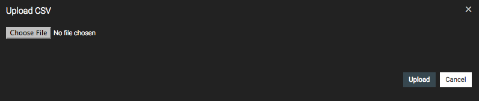
Click Choose File and browse for the CSV file you want to upload. Then click Upload . - In the Delimiter field, enter the character you want to use in order to separate the attribute values in each row of the CSV file.
- If you want to enter more detailed specificiations, click
Advanced Configuration . Then enter details as follows.
- To use the index value as the event timestamp, select the Timestamp Index option. Then enter the relevant index.
- If you want to increase the value of the timestamp for each new event, select the Increment event time by(ms) option. Then enter the number of milliseconds by which you want to increase the timestamp of each event.
- If you want the events to arrive in order based on the timestamp, select Yes under the Timestamp Interval option.
- Click Save to save the information relating to the CSV file. The name os the CSV file appears in the Feed Simulation tab in the left panel.
- To simulate a CSV file that is uploaded and visible in the Feed Simulation tab in the left panel, click on the arrow to its right. The simulated events are logged n the output console.
Simulating multiple events via databases¶
This section explains how to generate multiple events via databases to be analyzed via the Streaming Integrator.
Tip
Before simulating events via databases: - A Siddhi application must be created. - The database from which you want to simulate events must be already configured for the Streaming Integrator.
To simulate multiple events from a database, follow the procedure below:
-
Access the Streaming Integrator Studio via the
http://localhost:/editorURL. The Streaming Integrator Studio opens as shown below.Info
The default URL is
http://localhost:9090/editor. -
Click the Event Simulator icon in the left pane of the editor.
- Click the Feed tab to open the Feed Simulation panel.
- To create a new simulation, click Create. This opens the
following panel.
-
Enter values for the displayed fields as follows.
- In the Simulation Name field, enter a name for the event simulation.
- In the Description field, enter a description for the event simulation.
- If you want to simulate events at time intervals of a specific length, enter that length in milliseconds in the Time Interval(ms) field.
- If you want to enter more advanced conditions to simulate the
events, click Advanced Configurations. As a result, the
following section is displayed.
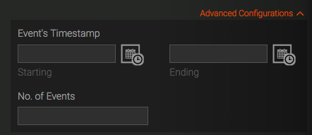{width="442" height="191"}
Then enter details as follows.- If you want to include only events that belong to a specific
time interval in the simulation feed, enter the start time
and the end time in the Starting Event's Timestamp and
Ending Event's Timestamp fields respectively. To select
a timestamp, click the time and calendar icon next to the
field.
Then select the required date, hour, minute, second and millisecond. Click Done to select the time stamp entered. If you want to select the current time, you can click Now . - If you want to restrict the event simulation feed to a specific number of events, enter the required number in the No of Events field.
- If you want to include only events that belong to a specific
time interval in the simulation feed, enter the start time
and the end time in the Starting Event's Timestamp and
Ending Event's Timestamp fields respectively. To select
a timestamp, click the time and calendar icon next to the
field.
-
In the Simulation Source field, select Database . To connect to a new database, click Add Simulation Source to open the following section.
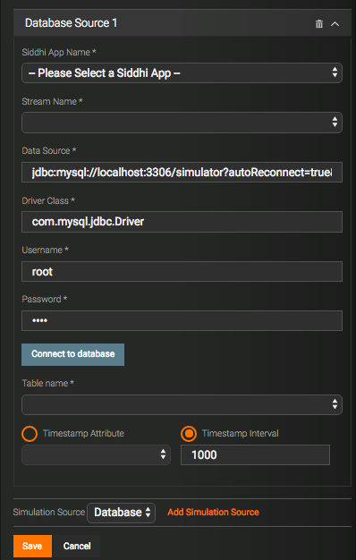
Enter information as follows:Field Description Siddhi App Name Select the Siddhi Application in which the event stream for which you want to simulate events is defined. Stream Name Select the event stream for which you want to simulate events. All the streams defined in the Siddhi Application you selected are available to be selected. Data Source The JDBC URL to be used to access the required database. Driver Class The driver class name of the selected database. Username The username that must be used to access the database. Password The password that must be used to access the database. -
Once you have entered the above information, click Connect to Database . If the datasource is correctly configured, the following is displayed to indicate that Streaming Integrator can successfully connect to the database.
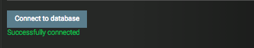 - To use the index value as the event timestamp, select the Timestamp Index option. Then enter the relevant index. If you want the vents in the CSV file to be sorted based on the timestamp, select the Yes option under CSV File is Ordered by Timestamp .
- To increase the timestamp of the published events, select the Timestamp Interval option. Then enter the number of milliseconds by which you want to increase the timestamp of each event.
-
Click Save. This adds the fed simulation you created as an active simulation in the Feed Simulation tab of the left panel as shown below.
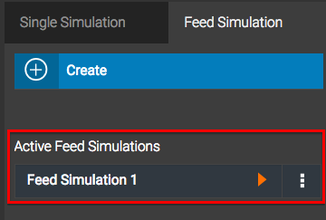 - Click on the play button of this simulation to open the Run or
Debug dialog box.

- If you want to run the Siddhi application you previously selected and simulate events for it, select Run . If you want to simulate events in the Debug mode, select Debug . Once you have selected the required mode, click Start Simulation . A message appears to inform you that the feed simulation started successfully. Similarly, when the simulation is completed, a message appears to inform you that the event simulation has finished.
Generating random events¶
This section explains how to generate random data to be analyzed via the Streaming Integrator.
Tip
Before simulating events, a Siddhi application should be deployed.
To simulate random events, follow the steps given below:
-
Access the Streaming Integrator Studio via the
http://localhost:/editorURL. The Streaming Integrator Studio opens as shown below.Info
The default URL is
http://localhost:9090/editor. -
Click the Event Simulator icon in the left pane of the editor.
- Click the Feed tab to open the Feed Simulation panel.
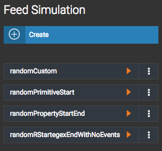 - To create a new simulation, click Create . This opens the
following panel.
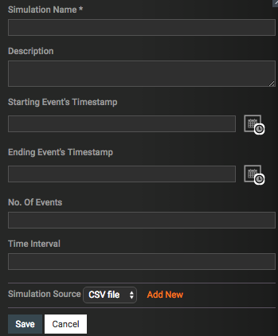 -
Enter values for the displayed fields as follows.
- In the Simulation Name field, enter a name for the event simulation.
- In the Description field, enter a description for the event simulation.
- If you want to include only events that belong to a specific
time interval in the simulation feed, enter the start time and
the end time in the Starting Event's Timestamp and Ending
Event's Timestamp fields respectively. To select a timestamp,
click the time and calendar icon next to the field.
Then select the required date, hour, minute, second and millisecond. Click Done to select the time stamp entered. If you want to select the current time, you can click Now . - If you want to restrict the event simulation feed to a specific number of events, enter the required number in the No of Events field.
- If you want to receive events only during a specific time interval, enter that time interval in the Time Interval field.
- In the Simulation Source field, select Random.
- If the random simulation source from which you want to simulate
events does not already exist in the Feed Simulation pane,
click Add New to open the following section.
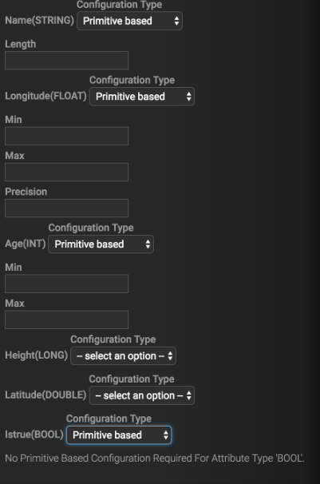 -
Enter information relating to the random source as follows:
- In the Siddhi App Name field, s elect the name of the Siddhi App with the event stream for which the events are simulated.
- In the Stream Name field, select the event stream for which you want to simulate events. All the streams defined in the Siddhi Application you selected are available to be selected.
- In the Timestamp Interval field, enter the number of milliseconds by which you want to increase the timestamp of each event.
-
To enter values for the stream attributes, follow the instructions below.
- To enter a custom value for a stream attribute, select
Custom data based from the list. When you select
this value, data field in which the required value can
be entered appears as shown in the example below.
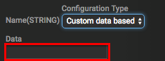{width="235" height="88"} -
To enter a primitive based value, select Primitive based from the list. The information to be entered varies depending on the data type of the attribute. The following table explains the information you need to enter when you select Primitive based for each data type.
Data Type Values to enter STRINGSpecify a length in the Length field that appears. This results in a value of the specified length being auto-generated. FLOATorDOUBLEThe value generated for the attribute is based on the following values specified. - Min : The minimum value.
- Max : The maximum value.
- Precision : The precise value. The number of decimals included in the auto-generated values are the same as that of the value specified here.
INTorLONGThe value generated for the attribute is based on the following values specified. - Min : The minimum value.
- Max : The maximum value.
BOOLNo further information is required because trueandfalsevalues are randomly generated. -
To randomly assign values based on a pre-defined set of meaningful values, select Property based from the list. When you select this value, a field in which the set of available values are listed appears as shown in the example below.
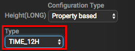 - To assign a regex value, select Regex based from the list.
- To enter a custom value for a stream attribute, select
Custom data based from the list. When you select
this value, data field in which the required value can
be entered appears as shown in the example below.
-
Click Save to save the simulation information. The saved random simulation appears in the Feed tab of the left panel.
- To simulate events, click the arrow to the right os the saved
simulation (shown in the example below).
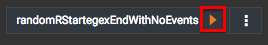
The simulated events are logged in the CLI as shown in the extract below.
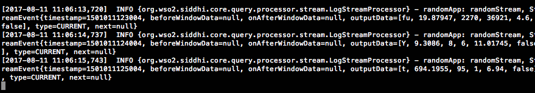